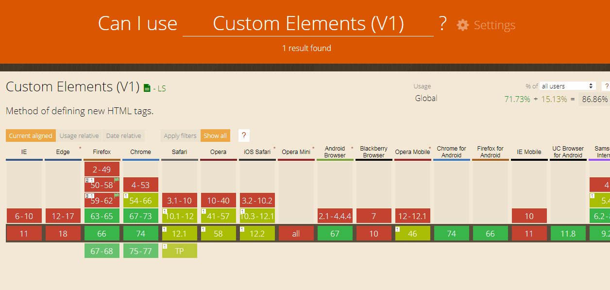
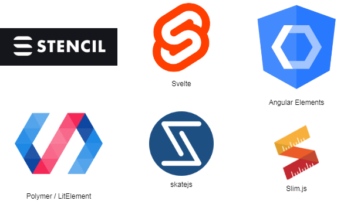

class: center, middle background-image: url(assets/puzzlespiele-background.jpg) # Puzzlespiele ## Micro Frontends - UI für Microservice Architekturen \- Joachim Weinbrenner \- ??? - Begrüßung - Mini Einleitung - **Fragen jederzeit!!!** --- background-image: url(assets/speaker-background.jpg) # Speaker .left-column[ - Familienmensch - Software-Architekt - Hacker - Firmenchef - Ausdauerathlet - Pilot ] .right-column[ - https://twitter.com/weinbrenner - https://github.com/weinbrenner - https://keybase.io/weinbrenner - More: https://www.weinbrenner.name/joachim/ ] --- class: center # Evolution der Softwarearchitekturen ??? - Schichtenarchitektur - horizontaler Schnitt - System kümmert sich um möglichst alle Aspekte des Produkts - wenn man nicht mehr weiter weiß => neue Schicht, ein paar Attribute an die DTO's und alles wird gut ;) --- class: center # Evolution der Softwarearchitekturen ??? - mehrere Teams an einem Projekt/Produkt - hoher Abstimmungsaufwand - 2-3 Releases / Jahr => Big Bang => Big Error - Aufwändig im Betrieb - Anfällig für Fehler bei Änderungen --- class: center # Evolution der Softwarearchitekturen ??? 1) Zeitalter der Entstehung von "Enterprise" 2) Zeitalter Middleware, J2EE, ... 3) Zeitalter der SOA 4) Aufkommen der Clouds - ermöglichte neue Architekturmuster --- class: center # Evolution der Softwarearchitekturen ??? - "kleine Monolithen" - Lose Kopplung - Vertikaler Schnitt - konzentrieren sich auf nur eine Sache! --- class: center # Evolution der Softwarearchitekturen <img src="assets/microservices-teams.png" width="720"/> ??? - 1 Team kümmert sich um 1 Microservice - Unabhängig - kaum Abstimmungsaufwand (wenn richtig geschnitten) --- class: center # Evolution der Softwarearchitekturen <img src="assets/microservices-implikationen.png" width="800"/> ??? Eigenschaften und Möglichkeiten von Micro Services => Konsens(?) --- class: center # Evolution der Frontends ??? - Ansprüche an FE wachsen permanent - => Immer fetter / funktionsumfangreicher - neue Plattformen (Mobil, ...) --- class: center # Die typische Evolution der letzten Jahre ??? - "Kleines" Projekt - FE included - Anfangs noch alles überschaubar --- class: center # Die typische Evolution der letzten Jahre ??? Festgestellt, dass Kundenanspruch ans FE stark steigt => Aufwand! => Eigenes FE Team rausgezogen --- class: center # Die typische Evolution der letzten Jahre ??? Zwei, drei Jahre ziehen ins Land: Projekt gewachsen zum schwer handlebaren Monolith --- class: center # Die typische Evolution der letzten Jahre ??? Aber da gibts ja jetzt was neues!!!: Microservises! (im Backend) FE bleibt Monolith Koordinationsaufwand zwischen BE(MS) und FE steigt, Flaschenhals --- class: center # Die typische Evolution der letzten Jahre ??? Die Lösung(?): API-Gateway - REST - BFF - GraphQL --- class: center # Wie kann man das besser machen? ??? Microservices hatten häufig eher einen technischen Schnitt als Bounded Context Zieht man das FE in den Service, kann man besser DDD machen! Also Usecase Teams statt technische Teams! --- class: center # Usecase Teams bringen ein Problem ??? Problem FE Integration herleiten - Benutzer interessiert die Architektur nicht => erwartet eine UI, ein UX Erlebnis! - Die FE's der MS-Teams müssen zu einer Oberfläche verschalten werden - aber wie? --- class: center # FE-Integration - Varianten <img src="assets/fe-integration-overview.png" width="840"/> ??? Bei "Links" beginnen, dann im Uhrzeigersinn rumlaufen Verweis auf Manfred Steyer! --- # FE-Integration - Links Die Frontends der einzelnen Microservices sind über Hyperlinks verbunden. .left-column[ ## + - echter Microservice Ansatz - seperate Entwicklung - seperates Deployment - echte Isolation - keine Versionskonflikte ] .right-column[ ## - - Gegebenenfalls Statemanagement erforderlich (Redux o.ä.) - keine Integration mit Komponenten anderer Teams ] .clear-two-column[ Optimal, wenn es kaum gemeinsamen State und keine Kommunikation zwischen den Frontends gibt. Lässt sich gut mit anderen Ansätzen kombinieren. ] ??? Krasses Beispiel: Hamburgermenü auf googleapis Aber auch versteckter auf vielen Seiten zu sehen, z.B. Amazon Simpelste Lösung => also generell anstrebenswert!!! --- # FE-Integration - iframes Really??? Tatsächlich lassen sich damit wunderbar isoliert und unabhängig entwickelte und deployte Frontends integrieren! Aber: Man kommt schnell in eine Scrollbar-Hölle (Rezising des Browserfensters) und hat enormen Aufwand das ganze optisch gut aufzubereiten. Man denke z.B. an eine Druckansicht. Zu empfehlen nur für die Integration von Legacy Systemen oder Produkten von Drittherstellern. ??? iframes nicht mit dem alten Frameset verwechseln! **Meta-Router** erforderlich, der die URLs der iframes synchronisiert Meta-Router ist SPOF! --- # FE-Integration - Metaframework Ein Metaframework dient der gleichzeitigen Integration mehrerer SPA's. Am bekanntesten: SingleSPA (https://github.com/CanopyTax/single-spa). .left-column[ ## + - Einfache Integration - Lazy Loading der FE's möglich - Zwei FE's auf einer Seite möglich ] .right-column[ ## - - Integrationsteam erforderlich - keine Isolation - gemeinsamer globaler Namespace und Browserobjekte ] ??? - Framework hängt die SPAs an der gewünschten Stelle in den DOM ein - Lädt und entlädt die SPAs - Auch State kann ggf. gehalten werden Integrationsproblem: z.B. Angular zone.js beeinflusst dann alle geladenen SPA's! Deployment Metaframework ist SPOF! --- # FE-Integration - Plugins Dynamisches Laden der einzelnen Frontends in einer Rahmenanwendung. .left-column[ ## + - Integration mehrerer FE's auf einer Seite möglich - Seperates Deployment ] .right-column[ ## - - Festlegung auf ein Framework in einer (Major-)Version über alle Teams - kein echter Microservice Ansatz - kein Treeshaking ] ??? Teams schreiben nur Plugins => hängen in Entwicklung und Produktion vom Rahmen ab Hoher Koordinationsaufwand Isoliertes Testen ggf. schwierig Bei Angular z.B. nur unter Ausbau von Webpack mgl. => z.B. mit SystemJS (Webpack erlaubt kein dynamisches Compilieren) --- # FE-Integration - Packages Teams stellen ihre Frontends als Packages (z.B. private NPM Registry) zur Verfügung. Shell-Applikation integriert alle Packages zur Compile-Zeit. .left-column[ ## + - Treeshaking möglich - mehrere FE's parallel auf einer Seite möglich ] .right-column[ ## - - Entwicklung bedingt unabhängig (selbe Major-Version wie Shell) - Deployment-Monolith => ggf. enormer Koordinationsaufwand - keine Isolation ] ??? Shell Team wird ganz schnell zum Flaschenhals Teams müssen die selbe Migrationsgeschwindigkeit an den Tag legen Für kleine Projekte mit sehr wenigen Team denkbar Isolierte Tests ggf. schwierig, dafür Gesamttest möglich --- # FE-Integration - Monorepo Ähnlich wie Packages, nur statt Registry ein großes, gemeinsames Coderepository. - alle Projekte teilen sich die gleichen Abhängigkeiten - Teams sind gezwungen, die selben Versionen zu verwenden - Entwickler haben immer eine produktionsnahe Umgebung - Bzgl. Compiling / Deployment sind verschiedene Ansätze möglich ??? Im Einsatz bei z.B. Google u. Facebook Teams sind gezwungen Schritt zu halten oder schnelle Teams werden eingebremst --- # FE-Integration - Web Components Einfache, standardisierte Möglichkeit der Integration. Ähnlich wie Metaframework-Ansatz, ohne dass ein Frameowork erforderlich wird. .left-column[ ## + - Unabhängige Entwicklung - Unabhängiges Deployment (oder Eincompilieren) - bedingte Isolation (Shadow DOM) - keine Abhängigkeiten zwischen Frontends - W3C Standard - mehrere FE's auf einer Seite möglich ] .right-column[ ## - - Gefahr von Namenskonflikten - Polyfills für ältere Browser (Performance) - andere Teams integrieren ggf. Web Component in älterer Version ] ??? Teams erstellen FE als Webcomponent, die in einem Rahmen landet Beliebig verschachtelbar! Mit quasi allen anderen Ansätzen kombinierbar! --- # Der Micro Frontends Ansatz .left-column[ ## Kleine Frontends? ## Micro Services im Frontend? ] .right-column[ ## Micro Frontends: - Vertikalen pro Team - SCS (Self Contained Systems) - Vertikale Dekomposition - UI Komposition ] ??? Verweis auf Michael Geers --- class: center # Der Micro Frontends Ansatz ??? Also sind wir wieder bei dem Bild nur dass sich MFE noch um die Komposition kümmert --- # Warum Micro Frontends - hohe Entwicklungsgeschwindigkeit - kleine, autonome Teams mit klarer Arbeitsaufgabe - Endanwenderzentriert - keine "technischen" Teams - enger Scope je Team - Entwickler haben immer den Überblick - kontinuierliche Frontend Erneuerung, ohne alles gleichzeitig neu machen zu müssen --- class: center # Adopt Micro Frontends! ??? - Nov 2016: ASSESS - Mar 2017: ASSESS - Nov 2018: TRIAL - May 2018: TRIAL - Apr 2019: ADOPT --- class: center # Eine Seite / SPA pro Team / SCS ??? - Team entscheidet Technologie - Einfache Seite(n) oder spa - Verknüpft via Hyperlinks --- class: center # Integration? <img src="assets/mfe-one-page-reicht das.png" width="600"/> ??? Soweit so schön! Was aber, wenn man Bestandteile aus mehreren Teams / FEs auf einer Seite anzeigen will? => Wir brauchen einen Weg der Integration! --- class: center # Integration! ??? Team 1 ist Besitzer der Seite => Beispiel Buchanzeige Team 2 und 3 stellen Komponenten bereit, die integriert werden - Team 2 z.B. Vorschlagsliste ähnlicher Bücher - Team 3 z.B. Suchfeld => Leitet dann um auf Seite des Teams 3 (Suche) Wie technisch integrieren? --- class: center # Integration via Web Components ??? - W3C Standard - 4 Bestandteile - Custom Elements um HTML Standard zu erweitern - Shadow DOM zum Einhängen von Elementen unabhängig von Haupt-DOM - HTML Includes zum Einbinden anderer HTML Seiten - HTML Templates: Template, das nicht gerendert wird aber zum mehrfachen Nutzen der Struktur sinnvoll --- class: center # Integration via Web Components ??? Uns interessieren hier nur die Custom Elements! --- # Integration via Web Components Beispiele Custom Elements: ```html <suche-buchsuche></suche-buchsuche> <empfehlung-liste-sidebar isbn="0345453743"></empfehlung-liste-sidebar> ``` ??? - Teampräfix - Parameter --- # Integration via Web Components ```javascript class EmpfehlungListeSidebar extends HTMLElement { static get observedAttributes() { return ['isbn']; } constructor() { super(); this.render(); } render() { const isbn = this.getAttribute('isbn'); // ... pick list from backend ... this.innerHTML = `<ul> ... </ul>`; } attributeChangedCallback(attr, oldValue, newValue) { this.render(); } disconnectedCallback() {...} } window.customElements.define('empfehlung-liste-sidebar', EmpfehlungListeSidebar); ``` ??? Code erklären Element Lifecycle: - constructor (created) - connectedCallback (attached to dom) - attributeChangedCallback (jemand hat ein Attribut geändert) - disconnectedCallback (removed from dom => cleanup) --- class: center # Integration via Web Components --- class: center # Integration via Web Components --- class: center # Integration via Web Components ??? **Hinweis auf andere Richtung via Events!** --- class: center # Kompatibel? Frameworks? ??? https://custom-elements-everywhere.com/ Testsuite zum Zusammenspiel von JS Frameworks mit Custom Elements Fast alle erfüllen > 90% Angular z.B. 100% React fällt etwas aus dem Rahmen und hat noch gewisse Probleme (71%) --- class: center # Kompatibel? Browser?  ??? https://caniuse.com/#feat=custom-elementsv1 V1 ist die aktuelle Version, V0 können fast alle Browser --- class: center # Kompatibel? Browser? ??? Für alle gängigen Browser sind Polyfills verfügbar => mehr oder weniger uneingeschränkte Funktion => Performanz nicht so gut --- class: center # Einfache Entwicklung mit Libraries  ??? Man muss nicht alles mit Plain JS machen Frameworks nehmen einem ein paar Schmerzen Angular Elements aktuell noch eingeschränkt, Lifecycle muss händisch implementiert werden, mit Ivy Renderer wirds gut Meine Favoriten: LitElement und Stencil --- # Serverseitige Integration Motivation - Statische Componenten / Blöcke - Performanz - Progressiv - Resilient ??? Wir haben jetzt die clientseitige Integration gesehen, sprich im Browser. Da können aber auch Dinge schief gehen oder nicht performant genug sein => Daher noch serverseitig! --- # Serverseitige Integration - SSI SSI: Server Side Includes (weitere Technologien verfügbar, z.B.: ESI, nodesi, tailor) ```html <!--#include virtual="/einzubindende/url" --> ``` ??? SSI bereits aus dem Jahr 2001 ;) Block im HTML als Kommentar => wird ignoriert, falls Server fehlkonfiguriert o.ä. --- class: center # Serverseitige Integration - SSI ??? Entscheidend: Webserver, der SSI beherrscht und entsprechend konfiguriert wurde! --- class: center # Serverseitige Integration - SSI ??? Clientanfrage wird entsprechend durchgeroutet. --- class: center # Serverseitige Integration - SSI --- class: center # Serverseitige Integration - SSI --- class: center # Serverseitige Integration - SSI ??? Virtual include Block mit geliefertem HTML ersetzen und gesamte Seite ausliefern --- # Custom Elements und SSI lassen sich wunderbar kombinieren! ```html <empfehlung-liste-sidebar isbn="0345453743"> <!--#include virtual="/empfehlung/liste?isbn=0345453743" --> </empfehlung-liste-sidebar> ``` ??? Zunächst wird serverseitig der include-Block gefüllt. Solange Web Component noch nicht vollständig geladen ist, wird der SSI Block angezeigt Erst mit Aufruf der innerHTML Methode in Custom Element wird Inhalt im DOM ausgetauscht Vorteile/Anwendungsgebiete: - Performanz - Resilienz - Ladeanimation / Platzhalter => kein Flackern --- class: center # Routing? ??? Softlinks teamintern, Hardlinks zwischen Teamseiten Der einfachere Fall - wenn ausreicht unbedingt hiermit arbeiten --- class: center # Routing? ??? Shell nur einführen, wenn unbedingt erforderlich! - Abhängigkeiten zum Shell-Team / Flaschenhals - Shell ist SPOF --- # Gemeinsame Grundlagen .left-column[ - Makro-/Mikroarchitektur - CI / CD - Infrastruktur (Cloud, Registries, ...) - CDN (JS Polyfills, CSS Resets) ] .right-column[ - ?? App Shell - ?? Tracking - ?? Monitoring - ?? ... ] --- class: center # Gemeinsames Design System ??? Endanwender interessiert sich nicht für MFEs! Erwartet wird eine einheitliche Oberfläche mit durchgängiger UI und UX - Barrierefreiheit - durchgängiges Look and Feel - Ergonomie --- # Gemeinsames Design System - Global Ein global eingebundenes CSS, das von allen Micro Frontends verwendet wird .left-column[ ## + - Konsistenz sichergestellt - einfach einzubinden ] .right-column[ ## - - brechende Änderungen zwingen alle Teams zum Handeln - wächst kontinuierlich und wird immer schwerer handlebar - unklar, wer welche Bestandteile nutzt oder ob überhaupt noch genutzt ] --- # Gemeinsames Design System - Packages Komponenten kopieren CSS aus Design System und Teams bauen Packages inklusive CSS. .left-column[ ## + - Teams sind unabhängig, eigens eingebundene Styles - Fragmente sind unabhängig von umgebenden Elementen - nur verwendetes CSS wird ausgeliefert ] .right-column[ ## - - Ggf. werden die gleichen Dinge von mehreren Teams gestyled - Temporär können visuelle Inkonsistenzen entstehen ] --- class: center, middle background-image: url(assets/puzzlespiele-background.jpg) # Best Practices --- class: center, middle background-image: url(assets/puzzlespiele-background.jpg) # Use the Platform ??? - Browser ist das Betriebssystem - => Tabs - => URLs, Bookmarkable, ... - DOM --- class: center, middle background-image: url(assets/puzzlespiele-background.jpg) # Weniger ist mehr ??? - nicht alle Frameworks mischen - brauch man wirklich dieses große Framework? - Kleinere MFEs lassen sich schneller refactoren oder komplett erneuern! --- class: center, middle background-image: url(assets/puzzlespiele-background.jpg) # Performance messen! ??? So findet man die Bestandteile, welche am meisten kosten (z.B. eingebundene dicke Angular Web Component) Am besten auch in Build-Prozess! --- class: center, middle background-image: url(assets/puzzlespiele-background.jpg) # Kein Shared State! ??? Keine globalen Variablen, Sessions, Cookies, ... --- class: center, middle background-image: url(assets/puzzlespiele-background.jpg) # Vermeide Shared Code ??? Nur da wo echt sinnvoll - z.B. Design System Ggf. Ansatz wie Otto: Wenn shared code, dann open source! --- class: center, middle background-image: url(assets/puzzlespiele-background.jpg) # Ownership: Verwende Team Präfixe ??? z.B. immer erster Teil-String eines Custom Element Namens = Team --- class: center, middle background-image: url(assets/puzzlespiele-background.jpg) # Vermeide Meta Framework ??? Nur wenn Vorteile echt überwiegen und abzusehen ist, dass kein Flaschenhals entsteht --- class: center, middle background-image: url(assets/puzzlespiele-background.jpg) # Isolierte Teams ??? Performantes Lösen der Aufgabe ohne Koordination --- class: center, middle background-image: url(assets/puzzlespiele-background.jpg) # Aber Austausch über Teams hinweg (voneinander lernen!) --- # Links - https://micro-frontends.org - https://micro-frontends.zeef.com/elisabeth.engel?ref=elisabeth.engel&share=ee53d51a914b4951ae5c94ece97642fc - https://scs-architecture.org/ - https://www.softwarearchitekt.at/post/2017/12/28/a-software-architect-s-approach-towards-using-angular-and-spas-in-general-for-microservices-aka-microfrontends.aspx - https://custom-elements-everywhere.com - https://github.com/CanopyTax/single-spa - https://www.thoughtworks.com/de/radar/techniques/micro-frontends - https://caniuse.com/ --- class: center, middle background-image: url(assets/puzzlespiele-background.jpg) # Vielen Dank für die Aufmerksamkeit! # Fragen?